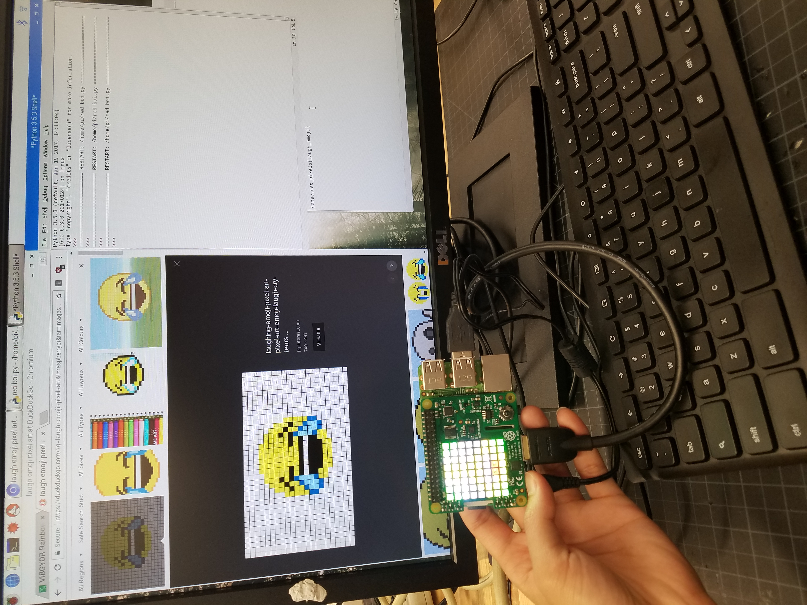
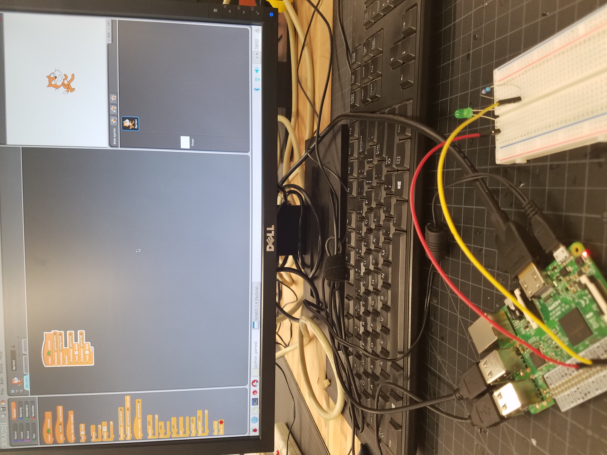

I got to learn how Python syntax worked and the fact that you can boot an OS from a small $35 thing was amazing.
I played Minecraft Pi on it and it was not too bad.
I also put electronic parts in a breadboard and connected it to raspberry pi.
The LED and the camera was pretty cool.
I learned that in physical computing you can use GPIO pins and for the code also.
I learned that what you put on your code appears in physical form such as LEDs.
Scratch and Python is important because it can code what happens on Raspberry Pi.
You can control LEDs, GPIO pins and such.
My favorite raspberry pi project was the making pixel art on LED because you could put anything you want on it with different color.


